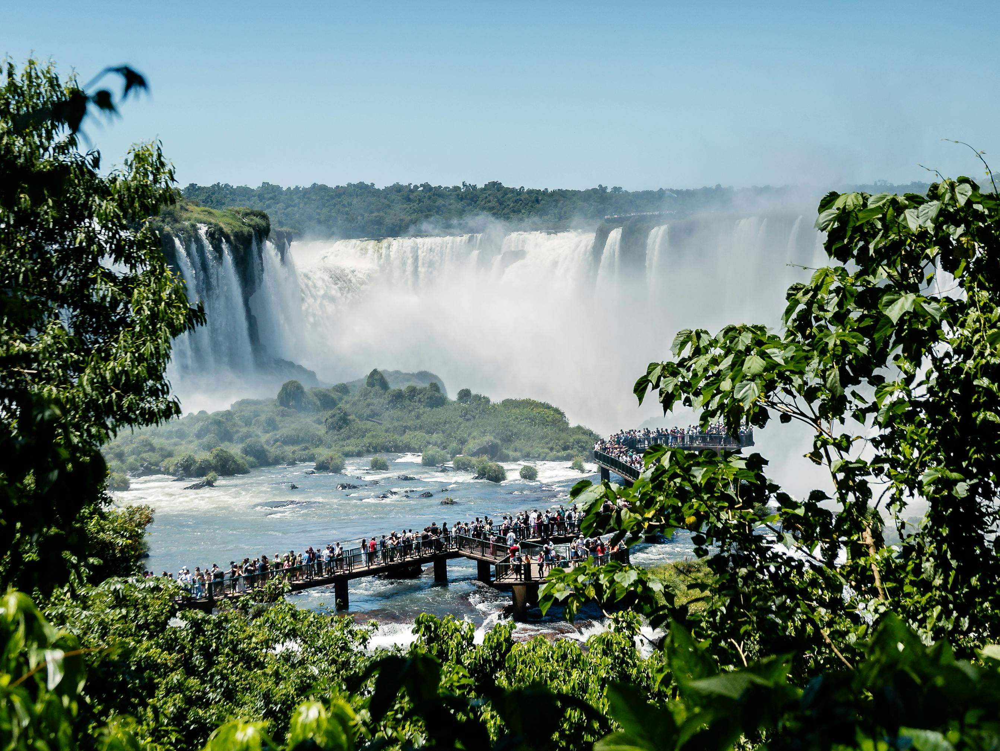
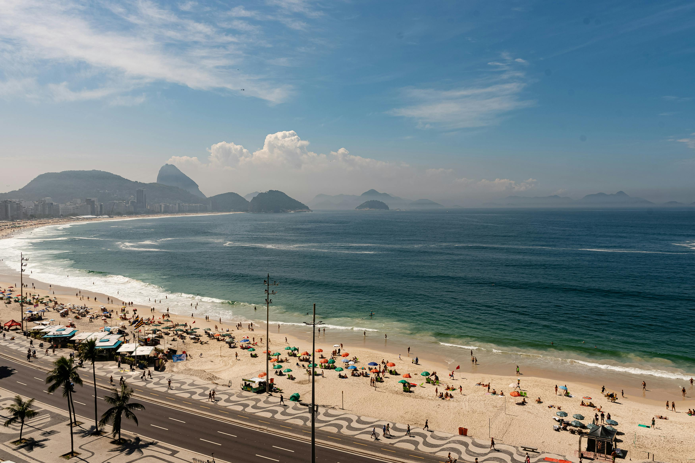

O Brasil é um país incrível com muitas opções de lugares para visitar. Ele tem destinos que são considerados maravilhas do mundo. Então, não importa o que você está procurando, o Brasil tem algo para você. Se você gosta de passar tempo com a família, viajar sozinho ou conhecer a cultura, o Brasil é o lugar perfeito. Conheça alguns pontos para se visitar no Brasil abaixo.
TURISMO PELO BRASIL
CONHEÇA OS MELHORES LUGARES PARA VISITAR NO NOSSO PAÍS
1. Cataratas do Iguaçu
As Cataratas do Iguaçu são formadas por um grande número de quedas d'água, cerca de 275. Essas quedas d'água estão localizadas na fronteira entre o Brasil, especificamente em Foz do Iguaçu, no estado do Paraná, e na Argentina, em Puerto Iguazú, na província de Misiones. Além disso, as Cataratas do Iguaçu estão dentro de dois parques nacionais que trabalham juntos para preservar uma grande área de Mata Atlântica, que é de aproximadamente 250 mil hectares. As Cataratas do Iguaçu são um exemplo impressionante da beleza natural do nosso planeta.

2. Cristo Redentor
Como falar de turismo no Brasil sem mecionar o icônico Cristo Redentor? Considerado umas das 7 maravilhas do mundo, é o ponto turistico mais visitado do Brasi. Sua estátua retrata Jesus Cristo com os braços abertos em forma de um cruz. Sua altura chega a impressionatnes 38 metros.

3. Praia de copacabana
A Praia de copacabana é a praia mais visitada do Brasil. Em 2025, entre janeiro de novembro, recebeu cerca de 4 milhões de visitas. É uma praia extensa, cobrindo uma área de 5,22 m². O calçadão de copacabana é outra forte carácteristica do local, o piso é feito de pedras portuguesas e possuem formato de ondas intercalando entre preto e branco, com uma divisão para ciclistas e pedestres.
